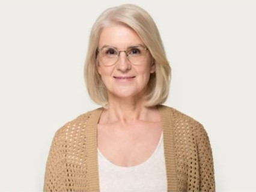

TRUPE DE ACTORI
TRUPA ARCADIA
PETRU GOGA, DIRECTOR DE SCENA
Petru Goga este directorul de scena al Trupei Arcadia de 12 ani, timp in care a directionat mai mult de 100 de piese de
teatru cu multiple generatii si categorii de actori, de la profesionisti pana la amatori. Abilitatea administrativa si
capacitatea sa de intelegere se trage, fara dubiu si din experienta
anterioara pe care a avut-o acesta ca actor profesionist, de mai mult de 15 ani inainte de preluarea postului de director de scena.

ADELINA STAN, ACTRITA
Adelina Stan este unul dintre cei mai vechi actori parte din Trupa Arcadia, careia i s-a alaturat in anul 2008,
dupa ce s-a despartit de trupa din care facea parte anterior. Experienta sa cu Trupa Arcadia
continua cu mare succes si dupa 14 ani datorita experientei sale vaste in viata de actor, meserie pe care o practica de peste 30 de ani.
TRUPA ARCADIA
PETRU GOGA, DIRECTOR DE SCENA
Petru Goga este directorul de scena al Trupei Arcadia de 12 ani, timp in care a directionat mai mult de 100 de piese de teatru cu multiple generatii si categorii de actori, de la profesionisti pana la amatori. Abilitatea administrativa si capacitatea sa de intelegere se trage, fara dubiu si din experienta anterioara pe care a avut-o acesta ca actor profesionist, de mai mult de 15 ani inainte de preluarea postului de director de scena.
ADELINA STAN, ACTRITA
Adelina Stan este unul dintre cei mai vechi actori parte din Trupa Arcadia, careia i s-a alaturat in anul 2008, dupa ce s-a despartit de trupa din care facea parte anterior. Experienta sa cu Trupa Arcadia continua cu mare succes si dupa 14 ani datorita experientei sale vaste in viata de actor, meserie pe care o practica de peste 30 de ani.